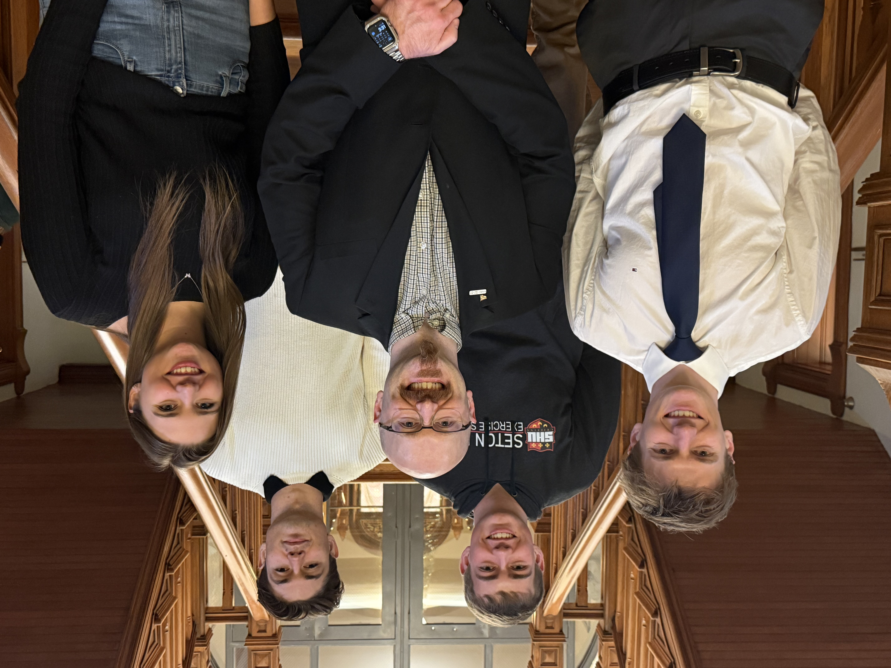
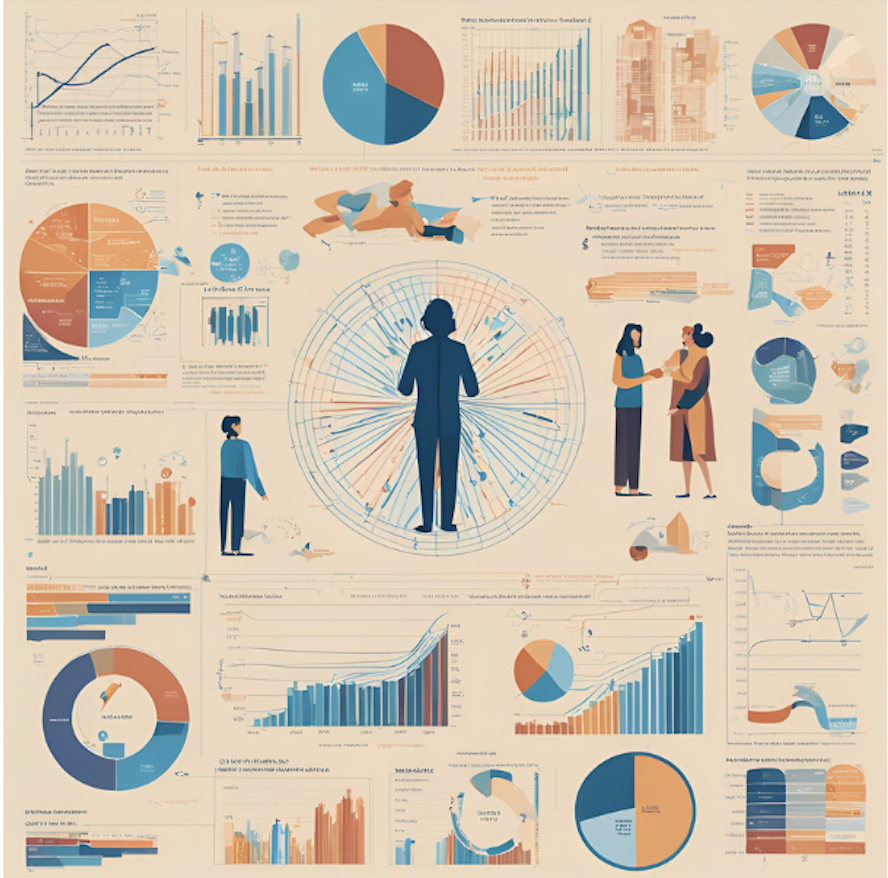

Benjamin Nicholson
Aspiring Quantitative Researcher


About Me
I moved to the United States from Australia at the age of 18 to pursue a lifelong dream of combining my footballing abilities & commitment to excellence in the classroom.
I was a collegiate athlete at Seton Hill University from 2021-2025, where I was captain of the Men's Soccer team, while pursuing a degree in Data Science.
The program took an interdisciplinary approach in exploring the intersection of mathematics, computer science and statistics while fostering a liberal arts curriculum.
In my Senior year I realized that I wanted to enter the world of Quantitative Finance and have been working towards this goal ever since.
I am working on publishing a research paper using the results from my quantitative finance research project as part of my senior capstone project.
I will begin my masters degree in Fall 2025, where I look to further my research and contribute to the field of quantatitive finance, harnessing an interdisciplinary approach rooted in mathematical principles.
"The way you do one thing is the way you do everything" - Martha Beck


Experience
Data Analytics Marketing Intern - CMMB
Research Conference Presentation Quantitative Finance Research Project
Research Conference Presentation Econometrics Automotive Project

Education
Bachelor of Science major in Data Science
Class of 2025 | GPA: 3.70
Masters of Statistics
Starting Fall 2025
Explore My
Recent Research
Enhancing Technical Analysis with Data Science
Discover how data science methodologies such as parameter optimization and monte carlo simulations can improve the performance of Technical Analysis (TA) techniques. Backtesting technical analysis strategies across different macroeconomic cycles while utilizing sector Exchanged Traded Funds (ETFs) produces a robust understanding of TA performance and economic cycles. It was found that TA struggled to outperform baseline buy & hold strategies in periods of strong economic growth. However it was clear that during vola economic periods, TA outperformed buy & hold strategies, upwards of 10%.
Research Interests
Data Science Methodologies
Stochastic Modeling
Markov Decision Processes
Machine Learning Engineering
Multivariate Analysis
Statistical Learning
Finance & Mathematics
Partial Derivatives
Fourier Analysis
Probability & Statistics Theory
Stochastic Calculus
Derivative & Asset Pricing
Technical & Fundamental Analysis
Browse My Recent
Projects

Comprehensive Analysis of Maryland Automotive Industry

Assessing the Predictability of Life Expectancy

Time Series Forecasting
Get in Touch